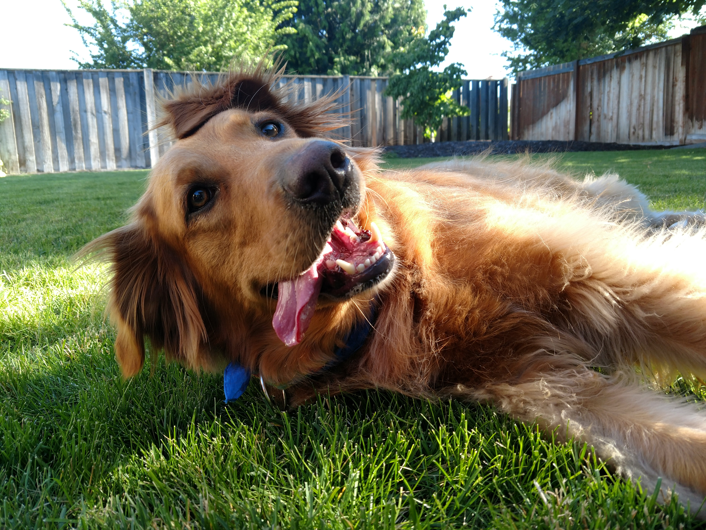

Hi! My name is Colin O'Neill and I am a software engineer of just over seven years. I hail from Williamstown Massachusetts attended Massachusetts College of Liberal Arts and graduated with a Computer Science bachelor's degree.
My work experience has been primarily in the .NET ecosystem, first in ag banking around the Springfield - Hartford corridor of MA/CT, then in hospitality in Spokane WA.
We made the move to Spokane in May of 2017 and had a really amazing road trip across the US following I-90. After our overnight stay with my grandfather in Ohio our stops farther west included:
Within a few weeks of moving to Spokane my wife and I decided to rescue a dog from Spokane County Regional Animal Protection Services (SCRAPS). We are very proud to have rescued our pup and given him a new lease on a better life!
